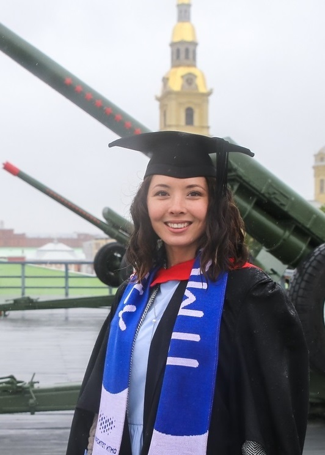

Oct 2017 – till now
Moscow
LLC "Lighting Technologies IGC", R&D
Optical engineer
- Design of optical systems;
- Modeling of optical elements in CAD program;
- Drawings in accordance with
ISO 10110; - Lens production assistance;
- Wide suppliers network.
Results
- Completed lens design projects for office lighting;
- Lined up optics supplier's network;
- Published technical papers on lighting professional subjects;
- Initiated and managed project for photometry analysis tool;
- Initiated and managed project automated photometry storage system in ERP and PLM system;
- Certified DiaLUX expert youtube lectures channel;
- Organized automated photolibrary for lightbeam comparison;
- Organized students internship in R&D department.

Feb 2014 – July 2017
Saint Petersburg
ITMO University
Engineer, Student optical engineering laboratory
- Founded a laboratory to support independent student-driven research
and development of optical devices, managed its growth to encompass
16 members and 3+ successfully-completed projects; - Granted for development of interactive educational tools that aim to explain and demonstrate
optical phenomena; - Speaker for students of Wuhan University of Technology and Science and Peking
University : introducing a higher-education institution of optics in
Russia and speaker for many other international events; - Visit preparation experience (British Government visit, ITMO University’s International Council).
Sept 2015 – June 2016
Saint Petersburg
Department of strategic communications
ITMO University
Coordinator for the International Year of Light and light-based technologies
- Run IYL 2015 web site and special lighting events.
EDUCATION
| Place | Description | Date |
|---|---|---|
| ITMO University Saint Petersburg |
Master’s degree in Optical Engineering • Successfully defended thesis on designing of device for illuminating non-flat surfaces; • Head of Student dept. Laboratory for Optical Engineering. Responsible for all organization and development of scientific and educational projects at the laboratory; • Granted by St. Petersburg Government for the thesis on designing of device for illuminating non-flat surfaces; • Awarded by SPIE Travel Scholarship to attend the Optics+Photics, San Diego 2016, Aug./Sep. 2016. |
Sep. 2015 – Jul. 2017 |
| Institut d’Optique Graduate School Palaiseau, France |
Academic semester • Studied non-linear optics, radiometry and photonics laboratory work finished. |
Sep. 2016 – Feb. 2017 |
| ITMO University Saint Petersburg |
Bachelor’s degree in Optical Engineering • Successfully defended thesis on video image stabilization methods; |
Sep. 2011 – Jun. 2015 |
| UNESCO Business school Ekateringburg |
Internship • Communication and presentation skills program |
Sep. 2010 |
© Design by: HTML5 UP.